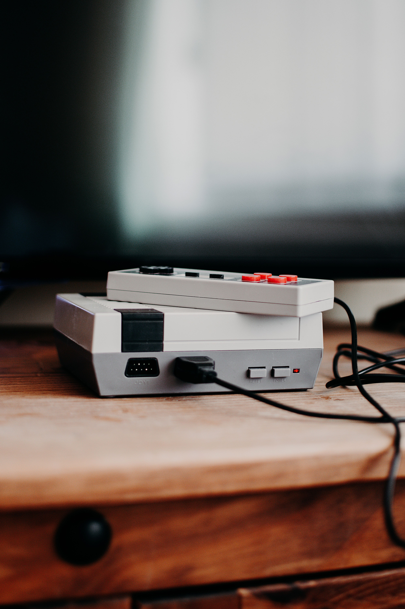
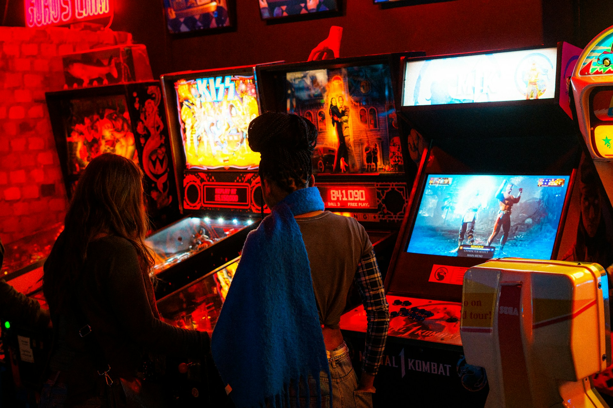
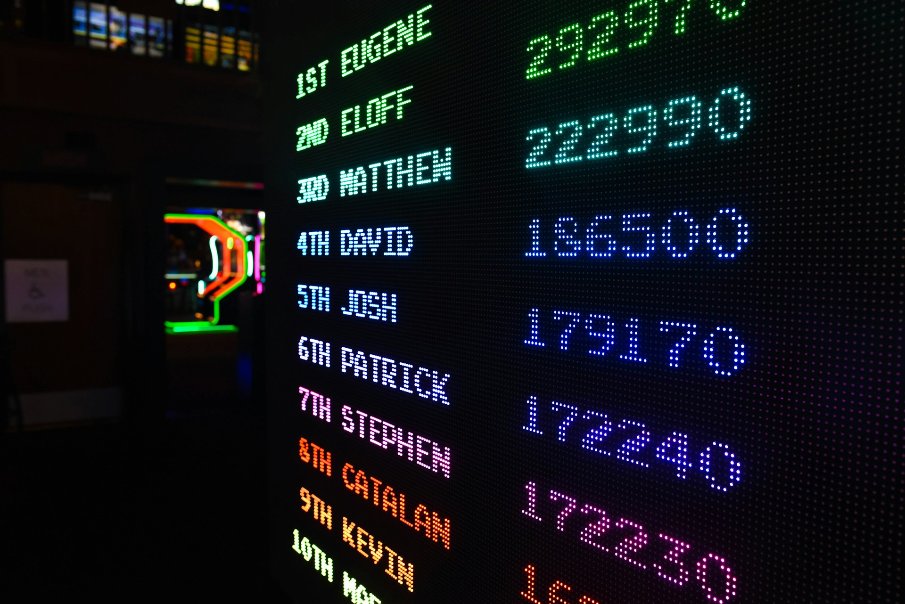
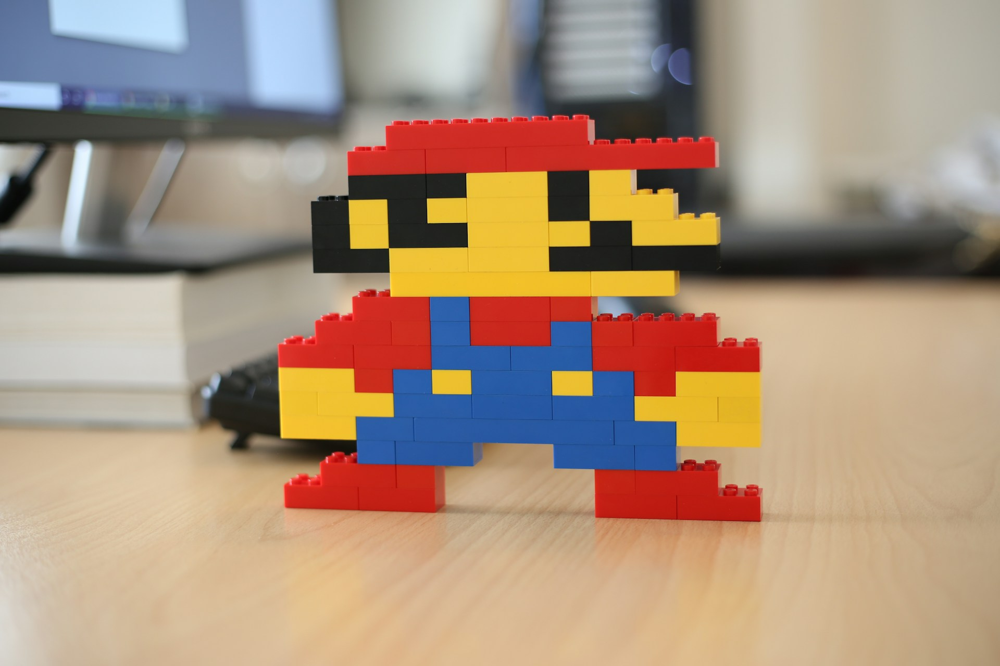
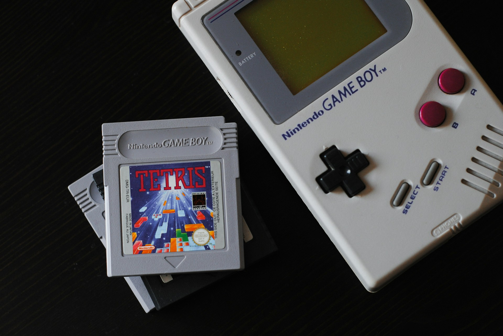
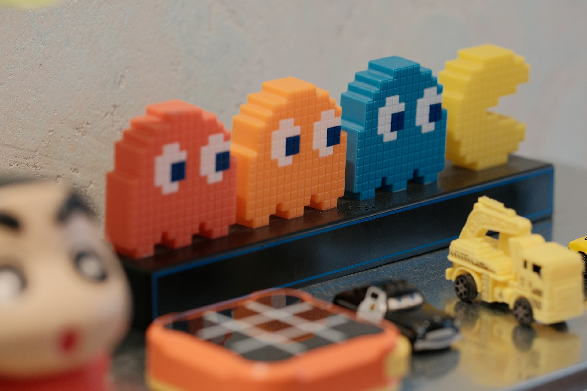
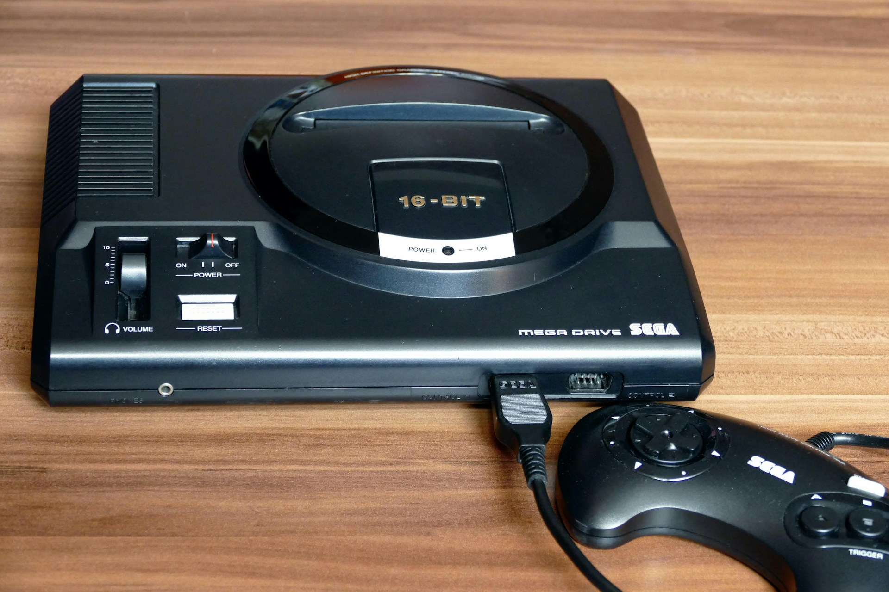
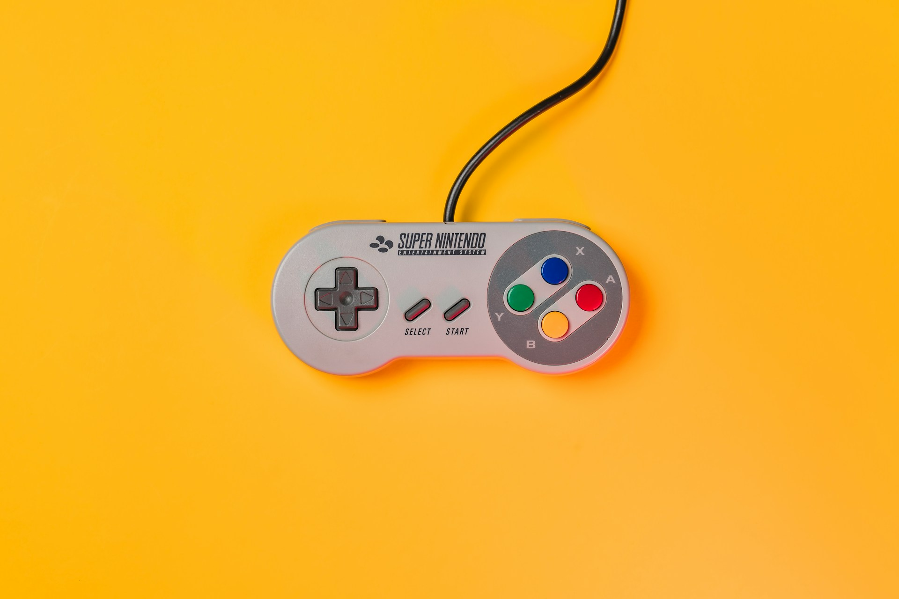

Replace all of the images with images of your choice and appropriate captions. Include two paragraphs about the contents of your site. Do not remove the skip to top link.
Gaming has been an integral part of my life for as long as I can remember. From childhood classic Nintendo & Sega games of the 80s & 90s to the modern consoles of today, the evolution of gaming technology has been incredible.
As technology advances, so do the possibilities for immersive gaming experiences. Below is a gallery of some of my favourite games and memories from my gaming journey. Enjoy!







